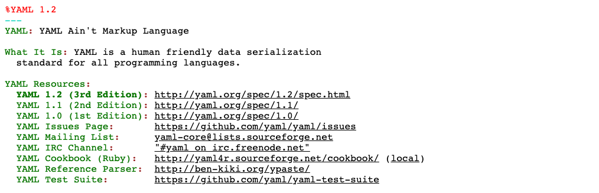

YAML 是一种非常简洁/强大/专门用来写配置文件的语言！
YAML 全称是 ”YAML Ain’t a Markup Language” 的递归缩写，该语言的设计参考了 JSON / XML 和 SDL 等语言,强调以数据为中心，简洁易读，编写简单。
1. YAML 语法特性
学过编程的人理解起来应该非常容易

- [1] 语法特点
- 大小写敏感
- 通过缩进表示层级关系
- 禁止使用
tab缩进，只能使用空格键 - 缩进的空格数目不重要，只要相同层级左对齐
- 使用
#表示注释
# yaml
languages:
- Ruby
- Perl
- Python
websites:
YAML: yaml.org
Ruby: ruby-lang.org
Python: python.org
Perl: use.perl.org
# Json
{
languages: [
'Ruby',
'Perl',
'Python'
],
websites: {
YAML: 'yaml.org',
Ruby: 'ruby-lang.org',
Python: 'python.org',
Perl: 'use.perl.org'
}
}- [2] 数据结构
- 对象: 键值对的字典
- 数组: 一组按次序排列的列表
- 纯量: 单个的且不可再分的值
# 纯量
hello
# 数组
- Cat
- Dog
- Goldfish
# 对象
animal: pets- [3] 引号区别
- 单引号(
''): 特殊字符作为普通字符串处理 - 双引号(
""): 特殊字符作为本身想表示的意思
- 单引号(
# 单引号
name: 'Hi,\nTom'
# 双引号
name: "Hi,\nTom"- [4] 内置类型列表
# YAML允许使用个感叹号(!)强制转换数据类型
# 单叹号通常是自定义类型，双叹号是内置类型
money: !!str
123
date: !Boolean
true| 对应编号 | 内置类型 | 解释说明 |
|---|---|---|
| 1 | !!int |
整数类型 |
| 2 | !!float |
浮点类型 |
| 3 | !!bool |
布尔类型 |
| 4 | !!str |
字符串类型 |
| 5 | !!null |
空值 |
| 6 | !!set |
集合 |
| 7 | !!seq |
列表 |
| 8 | !!map |
键值表 |
| 9 | !!binary |
字符串类型 |
| 10 | !!timestamp |
日期时间类型 |
| 11 | !!omap/!!pairs |
键值列表 |
2. YAML 中的纯量
纯量是最基本的且不可再分的值
- [1] 字符串
# 不适用引号
name: Tom
# 使用单引号
name: 'Tom'
# 使用双引号
name: "Tom"- [2] 布尔值
debug: true
debug: false- [3] 数字
12 # 十进制整数
014 # 八进制整数
0xC ＃十六进制整数
13.4 ＃浮点数
1.2e+34 ＃指数
.inf ＃无穷大- [4] Null
date: ~
date: null- [5] 时间
# 使用iso-8601标准表示日期
date: 2018-01-01t16:59:43.10-05:003. YAML 特殊类型
日常使用中基本不会用到的类型
- [1] 文本块
# 注意“|”与文本之间须另起一行
# 使用|标注的文本内容缩进表示的块，可以保留块中已有的回车换行
value: |
hello
world!
# 输出结果
# hello 换行 world！# +表示保留文字块末尾的换行
# -表示删除字符串末尾的换行
value: |
hello
value: |-
hello
value: |+
hello
# 输出结果
# hello\n hello hello\n\n# 注意“>”与文本之间的空格
# 使用>标注的文本内容缩进表示的块，将块中回车替换为空格最终连接成一行
value: > hello
world!
# 输出结果
# hello 空格 world！- [2] 锚点与引用
# 复制代码注意*引用部分不能追加内容
# 使用&定义数据锚点，即要复制的数据
# 使用*引用锚点数据，即数据的复制目的地
name: &a yaml
book: *a
books:
- java
- *a
- python
# 输出结果
book： yaml
books：[java, yaml, python]4. YAML 实例说明
光说不练假把式 => JS-Yaml 官网实例地址

---
# Collection Types #############################################################
################################################################################
# http://yaml.org/type/map.html -----------------------------------------------#
map:
# Unordered set of key: value pairs.
Block style: !!map
Clark: Evans
Ingy: döt Net
Oren: Ben-Kiki
Flow style: !!map { Clark: Evans, Ingy: döt Net, Oren: Ben-Kiki }
# http://yaml.org/type/omap.html ----------------------------------------------#
omap:
# Explicitly typed ordered map (dictionary).
Bestiary: !!omap
- aardvark: African pig-like ant eater. Ugly.
- anteater: South-American ant eater. Two species.
- anaconda: South-American constrictor snake. Scaly.
# Etc.
# Flow style
Numbers: !!omap [one: 1, two: 2, three: 3]
# http://yaml.org/type/pairs.html ---------------------------------------------#
pairs:
# Explicitly typed pairs.
Block tasks: !!pairs
- meeting: with team.
- meeting: with boss.
- break: lunch.
- meeting: with client.
Flow tasks: !!pairs [meeting: with team, meeting: with boss]
# http://yaml.org/type/set.html -----------------------------------------------#
set:
# Explicitly typed set.
baseball players: !!set
? Mark McGwire
? Sammy Sosa
? Ken Griffey
# Flow style
baseball teams: !!set { Boston Red Sox, Detroit Tigers, New York Yankees }
# http://yaml.org/type/seq.html -----------------------------------------------#
seq:
# Ordered sequence of nodes
Block style: !!seq
- Mercury # Rotates - no light/dark sides.
- Venus # Deadliest. Aptly named.
- Earth # Mostly dirt.
- Mars # Seems empty.
- Jupiter # The king.
- Saturn # Pretty.
- Uranus # Where the sun hardly shines.
- Neptune # Boring. No rings.
- Pluto # You call this a planet?
Flow style: !!seq [
Mercury,
Venus,
Earth,
Mars, # Rocks
Jupiter,
Saturn,
Uranus,
Neptune, # Gas
Pluto,
] # Overrated
# Scalar Types #################################################################
################################################################################
# http://yaml.org/type/bool.html ----------------------------------------------#
bool:
- true
- True
- TRUE
- false
- False
- FALSE
# http://yaml.org/type/float.html ---------------------------------------------#
float:
canonical: 6.8523015e+5
exponentioal: 685.230_15e+03
fixed: 685_230.15
sexagesimal: 190:20:30.15
negative infinity: -.inf
not a number: .NaN
# http://yaml.org/type/int.html -----------------------------------------------#
int:
canonical: 685230
decimal: +685_230
octal: 02472256
hexadecimal: 0x_0A_74_AE
binary: 0b1010_0111_0100_1010_1110
sexagesimal: 190:20:30
# http://yaml.org/type/merge.html ---------------------------------------------#
merge:
- &CENTER { x: 1, y: 2 }
- &LEFT { x: 0, y: 2 }
- &BIG { r: 10 }
- &SMALL { r: 1 }
# All the following maps are equal:
- # Explicit keys
x: 1
y: 2
r: 10
label: nothing
- # Merge one map
<<: *CENTER
r: 10
label: center
- # Merge multiple maps
<<: [*CENTER, *BIG]
label: center/big
- # Override
<<: [*BIG, *LEFT, *SMALL]
x: 1
label: big/left/small
# http://yaml.org/type/null.html ----------------------------------------------#
null:
# This mapping has four keys,
# one has a value.
empty:
canonical: ~
english: null
~: null key
# This sequence has five
# entries, two have values.
sparse:
- ~
- 2nd entry
-
- 4th entry
- Null
# http://yaml.org/type/str.html -----------------------------------------------#
string: abcd
# http://yaml.org/type/timestamp.html -----------------------------------------#
timestamp:
canonical: 2001-12-15T02:59:43.1Z
valid iso8601: 2001-12-14t21:59:43.10-05:00
space separated: 2001-12-14 21:59:43.10 -5
no time zone (Z): 2001-12-15 2:59:43.10
date (00:00:00Z): 2002-12-14
# JavaScript Specific Types ####################################################
################################################################################
# https://developer.mozilla.org/en/JavaScript/Reference/Global_Objects/RegExp
regexp:
simple: !!js/regexp foobar
modifiers: !!js/regexp /foobar/mi
# https://developer.mozilla.org/en/JavaScript/Reference/Global_Objects/undefined
undefined: !!js/undefined ~
# https://developer.mozilla.org/en/JavaScript/Reference/Global_Objects/Function
function: !!js/function >
function foobar() {
return 'Wow! JS-YAML Rocks!';
}
# Custom types #################################################################
################################################################################
# JS-YAML allows you to specify a custom YAML types for your structures.
# This is a simple example of custom constructor defined in `js/demo.js` for
# custom `!sexy` type:
#
# var SexyYamlType = new jsyaml.Type('!sexy', {
# kind: 'sequence',
# construct: function (data) {
# return data.map(function (string) { return 'sexy ' + string; });
# }
# });
#
# var SEXY_SCHEMA = jsyaml.Schema.create([ SexyYamlType ]);
#
# result = jsyaml.load(yourData, { schema: SEXY_SCHEMA });
foobar: !sexy
- bunny
- chocolate